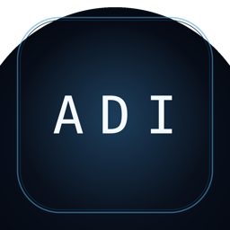

ADI
Agent–Device Interface
A runtime for agents that talk, see, and act on real devices — and keep working when the network doesn't.
Cloud is an optional accelerator, never the substrate. Every layer has a local fallback: if the remote brain is gone, a local one answers; if the neural voice is gone, the system voice takes over. It never goes silent.
Run it
# the runtime listens on localhost; anything that can POST JSON can drive it pip install adi-sdk from adi_sdk import ADI adi = ADI() for chunk in adi.chat("what changed on this machine today?"): print(chunk, end="", flush=True) adi.say("backup finished") # speak it, locally adi.proactive() # None unless it has something worth saying
What "local-first" buys you
| Layer | Cloud version | ADI |
|---|---|---|
| Brain | request fails | local model answers |
| Voice | 402 / quota | system voice |
| Memory | vendor database | a file on your disk |
| Proactivity | engagement timers | gated by real state numbers |
Four rules
- No cloud required. A cloud call is a performance decision, never a correctness dependency.
- Every layer degradable. Pull any plug; the system still answers.
- Names are not identities. Swap the model or the voice — who it is lives in memory and permissions.
- Speak only when it changes your next action. No evidence, no speech.
Licenses
| Path | License | Why |
|---|---|---|
adi-sdk/ | Apache-2.0 | usable in commercial products |
adi-runtime/ adi-app/ | AGPL-3.0 | improvements flow back |
adi-docs/ | CC BY 4.0 | docs are meant to spread |